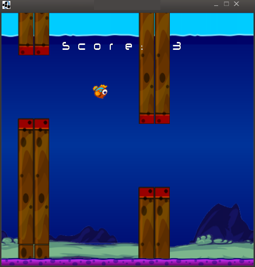
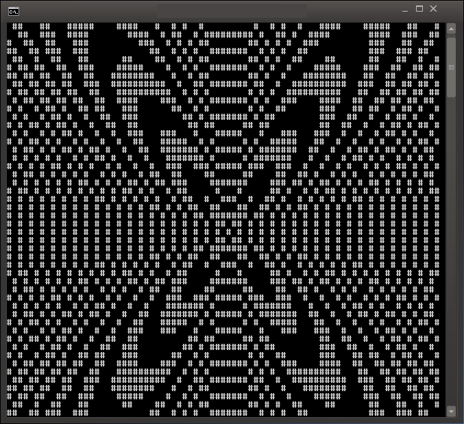

0.5.1
AnyaBASIC
[A]bsolutely [N]ot [Y]our [A]verage BASIC
"The little toy language that could."
AnyaBASIC is a portable Interpreted Programming Language made in Java. It has a syntax similar to BASIC with a bit of C, Javascript and PASCAL thrown in.
This is a "Toy Language", so don't expect much. However, while this started as a "joke", this language evolved into something which is capable of doing a lot more(games, graphics, etc). It's also a language whose keywords are in English so it should be a good language to use in teaching kids how to program.

Author
Relminator 2016
Richard Eric M. Lope BSN RN
email: vic_viperph@yahoo.com
Philippines
Features
- Very easy to use
- Case insensitive
- As loosely-typed as any language can get
- Easy to figure out with clean syntax
- Very few global keywords
- Fast(for an interpreter made in an interpreted language)
- Portable
- Graphics capable
- Full hardware acceleration
Quirks
- All variables are global(even inside functions).
- Arrays can store both numbers and strings(talk about loose-typing).
- Supports Jejemon and Filipino(Tagalog) keywords
Instructions
Library API
Official Site/Facebook
Credits
- LWJGL for AnyaBasic's graphics and sound backend.
www.lwjgl.org
- The ConTEXT team for ConTEXT.
http://www.contexteditor.org
- Mehmet Emin Coskun for Contra.
mehmetcoskun@fastmail.com.
- Bob Nystrom for Jasic.
www.stuffwithstuff.com
- Andre Victor T. Vicentini for FreeBasic.
www.freebasic.net
- Matthias Mann for his nice PNG decoder.
- Jonelle H. Castañeda for the trick to force the console to open on windows.
- Alexis Munsayac for some really important inputs while testing the language.
- Wilmar Calderon and Gerald Cruz for beta testing.
- Jhun Leo Belen and Vincent Kyle Eusebio for the jejemon conversions.
More Screenshots

